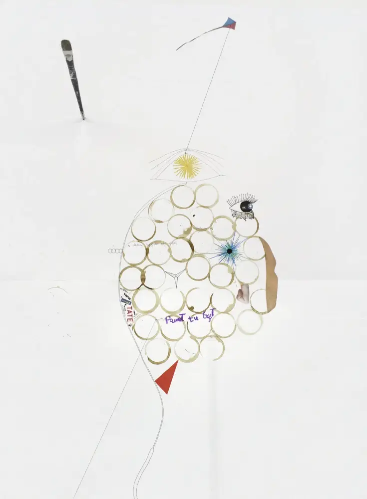
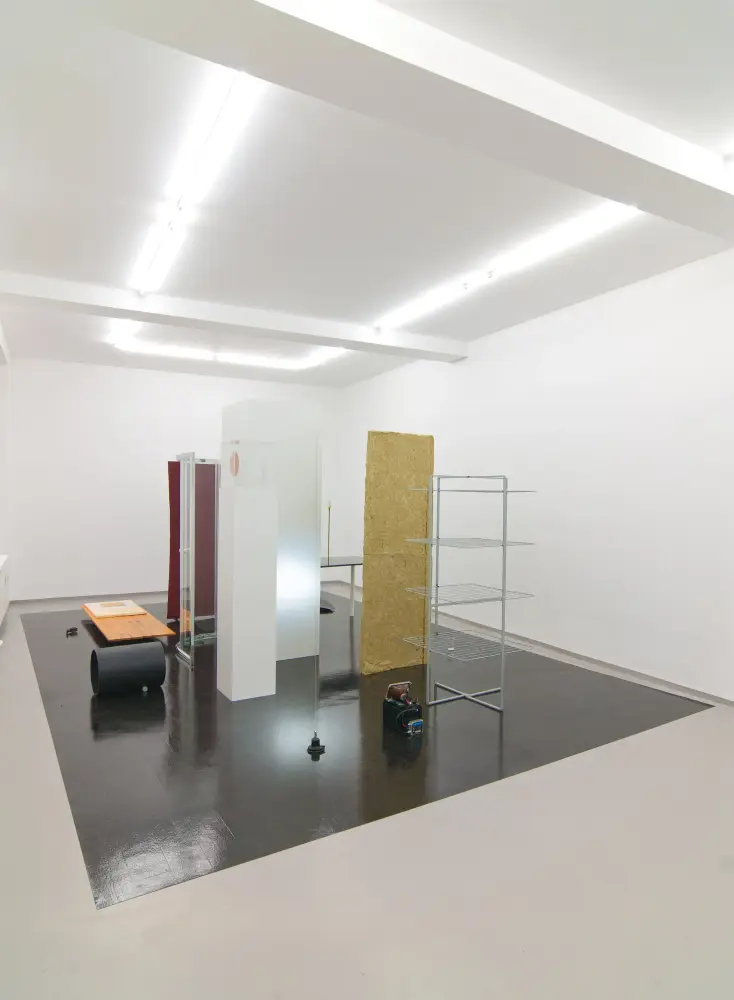

pav
learn | write | scheme | design | overcome bias | love + fun | keep it short | max good
pav ~ $ whoami
hi, i'm pav
Paweł Sysiak. pav for short.
designer. writer. art background. interested in almost anything.
// how to survive being interested in almost anything?
the short version, in my own words
My name is Paweł, or pav for short. I learn, write, and am scheming how to improve epistemics and collective coordination using technology. I am currently working at Softmax. I do UI / UX design, wrote AI Revolution 101 and have a background in art. I grew up in Poland and live between the US and EU.
pav ~ $ receipts
receipts: stuff i made and did
- now
- 10+ years
shipping products
Rebuilt the design system at Plume and shaped products reaching 1B+ devices. Also BlackRock.
see the design work - essay
AI Revolution 101
In 2016 I squeezed Tim Urban's two-part Wait But Why essay to a third of its length, with their approval, and added new animations. A 35 minute read that reached 160k+ people.
read it - wiki
pawel.world
My personal wiki, live since January 2020. I try to distill the most impactful knowledge: cognitive biases, mental models, well-being, collective coordination.
get lost in it - coordination
helping groups decide
Led user research on AI alignment tooling at AI Objectives Institute. Built coordination systems for collective decision-making with Plurality Institute.
case study - film
How Art Works?
A serious movie about problems and solutions. A co-created 12 minute film on the art world, global culture and metaphysics. Went viral in the art corner of the internet. 35k+ views.
watch it - gallery
Billy Gallery
An internet art project I led, exploring how art can exist online. Exhibitions, events, trips, screenings, memes.
visit Billy - app
Brutu timer
An iOS timer that burns your money if you leave the app. Stay focused or pay up.
see the project - writing
pav ~ $ art
the art era: with all my heart i believe in art
I worked as an artist creating sculptures, installations, and conceptual art. Some of my work lives in the collection of the Museum of Modern Art in Warsaw. I showed in Warsaw, Beirut, Ljubljana and Prague.




// printed in blue. hover or tap a picture for full color.
pav ~ $ values
values + directions: the stuff i care about
- overcoming bias
- I am sure I suffer from many, especially the mother of all, my-side bias. So pleassssse send feedback.
- love and fun
- I want to be what loves becoming, what laughs, friends and has fun.
- short
- "I am sorry that I didn't have time to write a shorter letter." Pascal said it. I try to distill knowledge into as few words as possible.
- a peasant's reasoning
- A Polish expression: say it in the simplest possible terms. "If you can't explain it simply you don't understand it well enough." That is Richard Feynman's learning method.
- precise
- I will prioritize precision over persuasion.
- long-term
- I try to resist the new and select the knowledge that has a long expiry date.
- max good
- I feel the most meaning when I am in the process, however wiggly, of attempting to create the most positive impact.
- almost anything
- It's tough to "succeed" as a generalist. It's also the most fun.
pav ~ $ believe
in my wiki we believe:
- AI alignment is not the default
- What we LOVE to do is work on bits that might positively affect the long-run future
- The impact of various interventions follows a heavy-tailed distribution
- The question is not can they reason, nor can they talk, but can they suffer
- All possible views of humanity's future are wild
pav ~ $ links
ok now go click something
- pawel.worldthe wiki
- design.sysiak.comthe design work
- Substackthe essays
- AI Revolution 101the big one
- artthe portfolio
- GitHubpawsys
- LinkedInsay hello
What truths about myself are people trying to avoid telling me? Send feedback.